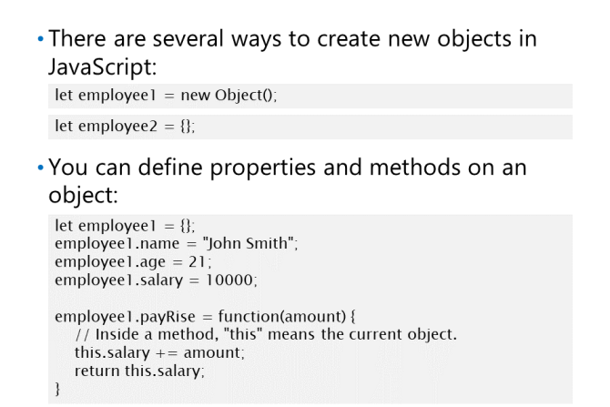
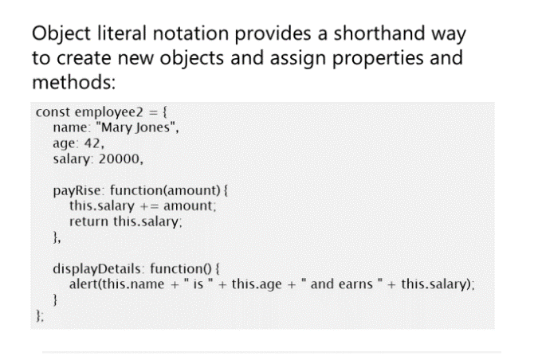
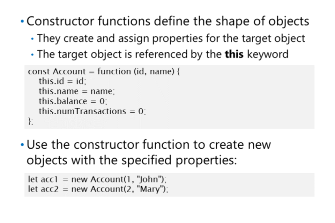
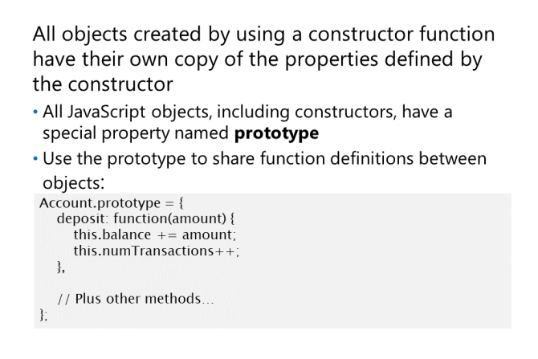
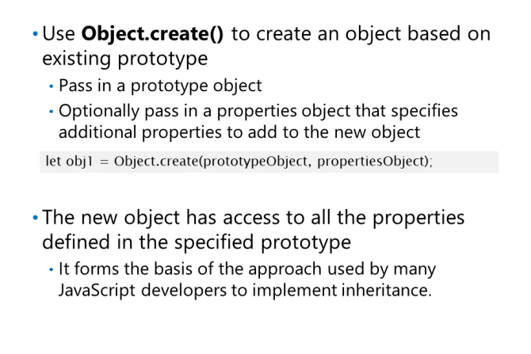
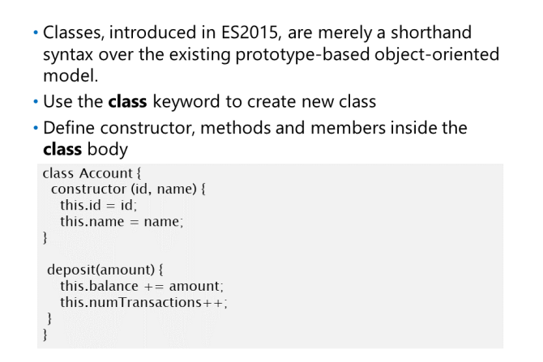

Tworzenie prostych obiektów

let employee1 = new Object();
Ta instrukcja tworzy obiekt bez
właściwości i bardzo ograniczona funkcjonalność (tylko
ma metody dostarczone przez typ obiektu),
i przypisuje obiekt do zmiennej o nazwie
employee1. Możesz użyć zmiennej employee1
aby uzyskać dostęp do obiektu.
Prostszym sposobem utworzenia obiektu jest użycie nawiasów klamrowych {}. Poniższy przykład jest semantycznie równoważny
pierwszy przykład:
let employee2 = {};
Dodawanie właściwości do obiektu
Puste obiekty nie są zbyt przydatne, więc JavaScript umożliwia dodawanie właściwości do obiektu za pomocą
następująca składnia:
objectReference.propertyName = value;
Dodawanie metod
Dostęp do właściwości obiektu
Aby uzyskać dostęp do właściwości lub wywołać metodę na obiekcie, użyj następującej składni:
objectReference.propertyName = value;
objectReference.functionName(parameters);
let newSalary = employee1.payRise(1000);
document.write("New salary for employee1 is " + newSalary);
Korzystanie z Object Literal Notation

Notacja dosłowna obiektu stanowi skrótowy sposób
aby zdefiniować obiekt i ustawić jego właściwości. Obiekt
notacja literalna ma następującą składnię:
const objectName = {
property1: value1,
property2: value2,
...
};
const employee1 = {
name: "John Smith",
age: 21,
salary: 10000
};
const employee2 = {
name: "Mary Jones",
age: 42,
salary: 20000,
payRise: function(amount) {
this.salary += amount;
return this.salary;
},
displayDetails: function() {
alert(this.name + " is " + this.age + " and earns " + this.salary);
}
};
Uzywanie konstruktorów

const Account = function (id, name) {
this.id = id;
this.name = name;
this.balance = 0;
this.numTransactions = 0;
};
Po zdefiniowaniu funkcji konstruktora możesz użyć konstruktora do utworzenia nowego obiektu przez
za pomocą nowego słowa kluczowego. Możesz przekazać parametry do funkcji konstruktora, aby określić wartości początkowe
dla obiektu. Podczas tworzenia obiektu za pomocą nowego słowa kluczowego JavaScript wykonuje następujące czynności
1. Tworzy nowy obiekt.
2. Ustawia właściwość konstruktora nowego obiektu na odwołanie do funkcji konstruktora.
3. Przypisuje to do odniesienia do nowego obiektu.
4. Wywołuje kod w funkcji konstruktora nowego obiektu, aby ustawić właściwości obiektu
let acc1 = new Account(1, "John");
let acc2 = new Account(2, "Mary");
Używanie Prototypów
Prototypy umożliwiają dzielenie funkcji między obiektami utworzonymi przy użyciu tego samego konstruktora. Wszystko
Obiekty JavaScript, w tym funkcje konstruktora, mają specjalną właściwość o nazwie prototype. The
prototyp to tak naprawdę kolejny obiekt, do którego można przypisać nowe właściwości i metody; używasz go jako
plan tworzenia nowych obiektów.
Poniższy przykład ustawia prototyp funkcji konstruktora konta pokazanej w poprzednim
temat. W przykładzie dodano metody wdrażania zachowania konta bankowego:

nowy obiekt ma dostęp do wszystkich właściwości zdefiniowanych w funkcji konstruktora i wszystkich właściwości zdefiniowanych przez prototyp dla
funkcja konstruktora. Jednak właściwości zdefiniowane przez prototyp są wspólne dla wszystkich instancji
obiekt.
Poniższy przykład tworzy niektóre obiekty przy użyciu funkcji Account constructor function i ilustruje
jak można wywoływać metody zdefiniowane w prototype object funkcji Account constructor.
Należy pamiętać, że właściwości danych zdefiniowane w Account constructor (id, name,
balance, and numtransactions) są specyficzne dla każdego obiektu (acc1 i acc2), podczas gdy metody
zdefiniowane przez prototyp (deposit, display, and withdraw) są wspólne dla wszystkich instancji. Ten obiekt
używane przez te funkcje odwołuje się do odpowiedniej instancji:
let acc1 = new Account(1, "John");
let acc2 = new Account(2, "Mary");
acc1.deposit(100);
acc1.displayDetails();
acc2.withdraw(50);
acc2.displayDetails();
Korzystanie z metody Object.create()

Object ma metodę create (), która
umożliwia utworzenie obiektu na podstawie
istniejący prototyp i opcjonalnie zapewni
dodatkowe właściwości. Ta funkcja umożliwia
wdrożyć wydajną formę dziedziczenia
na prototypach.
Object.create(prototypeObject,
propertiesObject)
prototypeObject określa
obiekt do użycia jako prototyp nowego obiektu. Możesz wywołać Object.getPrototypeOf()
, jeśli chcesz uzyskać prototyp istniejącego obiektu do użycia tutaj.
propertiesObject jest opcjonalny i określa obiekt, którego właściwości zostaną dodane
do nowego obiektu.
Poniższy przykład tworzy obiekt przy użyciu prototypu null i dodaje dwie proste właściwości
let obj1 = Object.create(null, {
prop1: {value: "hello", writable: true}, // read/write property
prop2: {value: "world" } // read-only property
});
Następny przykład tworzy obiekt o nazwie obj2 przy użyciu prototypu obiektu acc1 zdefiniowanego w
wcześniejszych przykładach
// Account constructor function, same as before.
const Account = function (id, name) { ... };
// Account prototype, same as before.
Account.prototype = { ... };
acc1 = new Account(...);
// Create an object by using the Account prototype.
let obj2 = Object.create(Object.getPrototypeOf(acc1));
Korzystanie z klas ES2015

Klasy ES2015
mają podobną składnię do definicji klasy w
języki takie jak C # i Java, ale pod
kaptur są zasadniczo różne i
zaimplementuj ten sam obiektowy obiekt JavaScript
model wyjaśniony w poprzednich tematach.
class Account {
constructor (id, name) {
this.id = id;
this.name = name;
this.balance = 0;
this.numTransactions = 0;
}
}
Klasa konta zdefiniowana powyżej jest jedynie skróconą składnią w stosunku do funkcji konstruktora konta
zdefiniowane na poprzednich lekcjach. Podobnie jak w przypadku funkcji konstruktora, możemy teraz utworzyć konto
wystąpienie przy użyciu new.
let acc1 = new Account(1, "John");
let acc2 = new Account(2, "Mary");
Ciało klasy jest częścią nawiasów klamrowych. Metody są w rzeczywistości funkcjami zdefiniowanymi we właściwości prototypu
obiektu, jak opisano we wcześniejszych lekcjach.
Poniższy przykład pokazuje, jak dodać metody do naszej klasy konta:
deposit, withdraw and displayDetails są ostatecznie przypisywane jako właściwości do prototypu konta
obiekt i możemy je wywoływać tak jak wcześniej.
let acc1 = new Account(1, "John");
let acc2 = new Account(2, "Mary");
acc1.deposit(100);
acc1.displayDetails();
acc2.withdraw(50);
acc2.displayDetails();